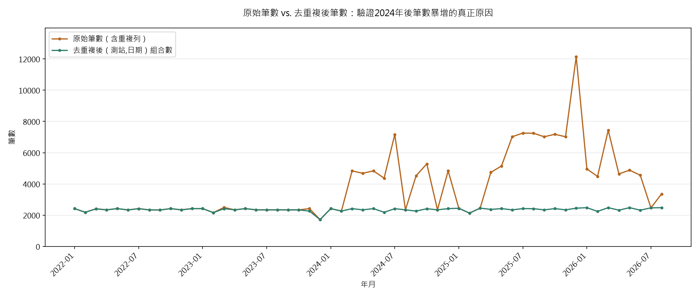
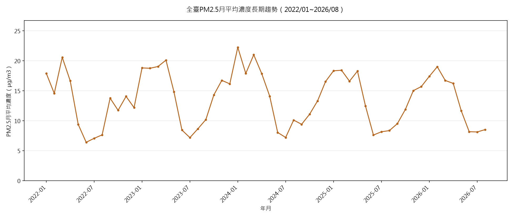
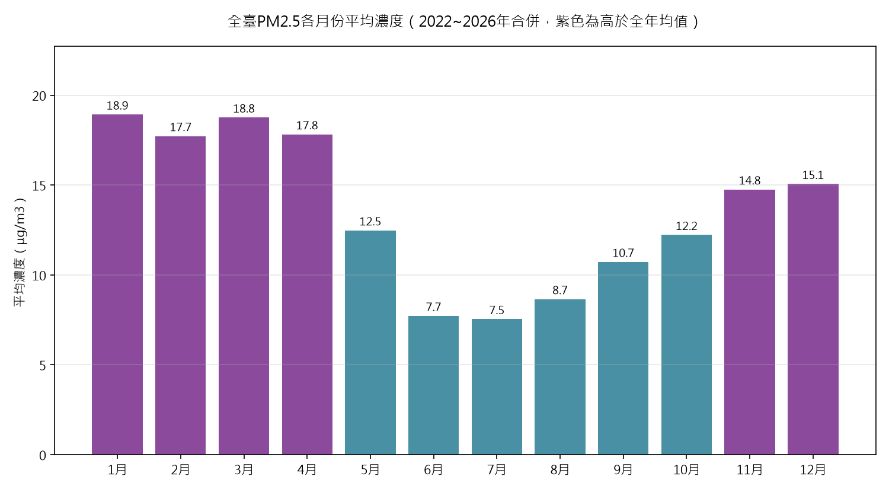
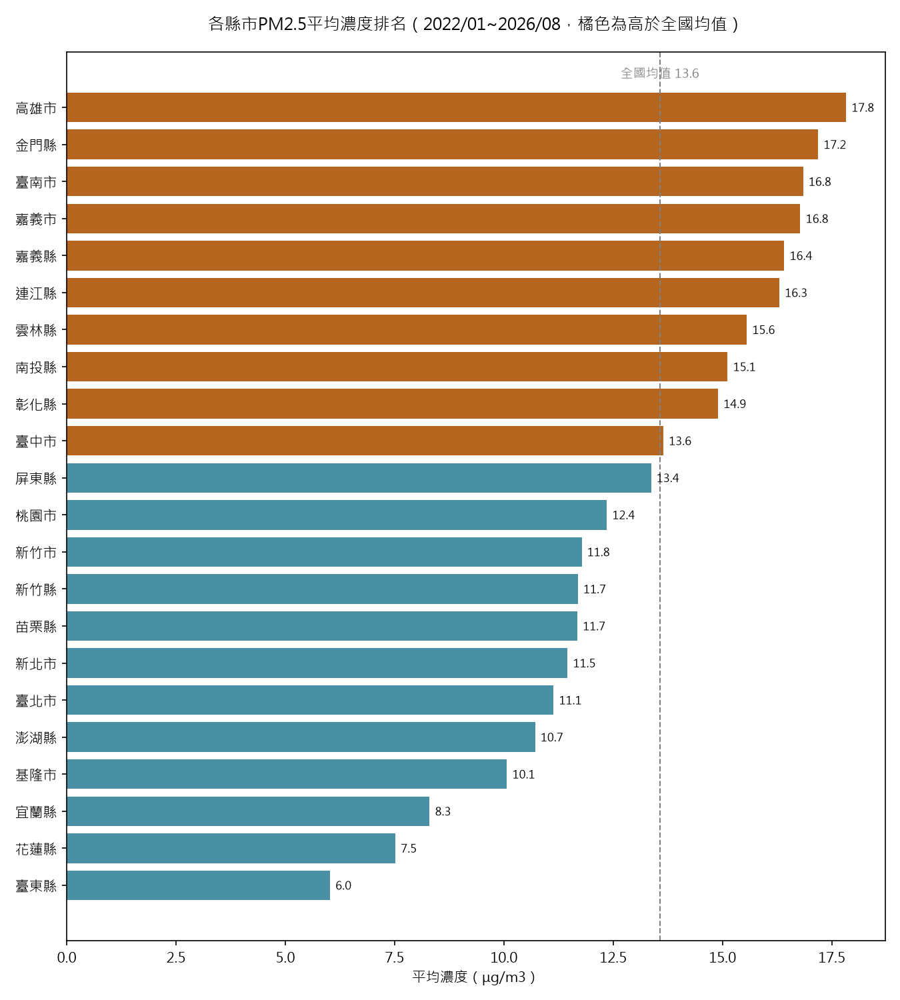
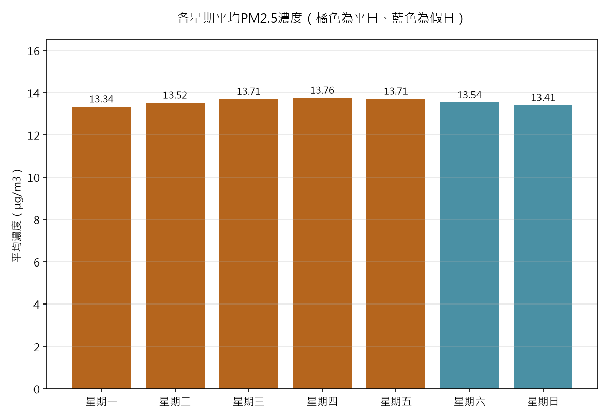
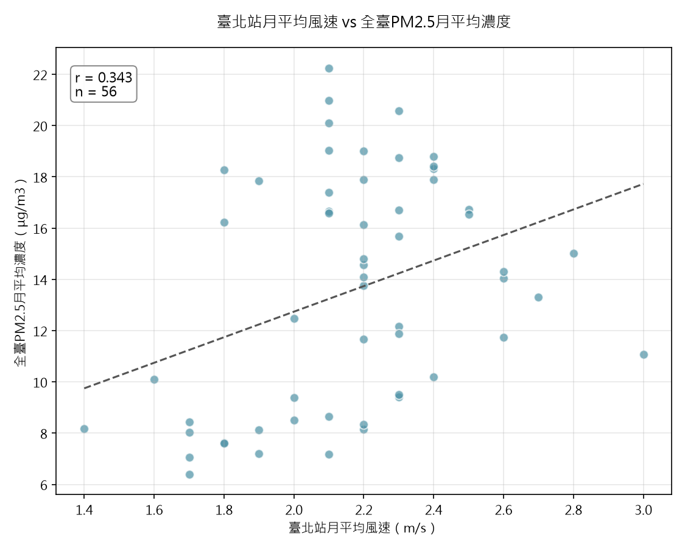
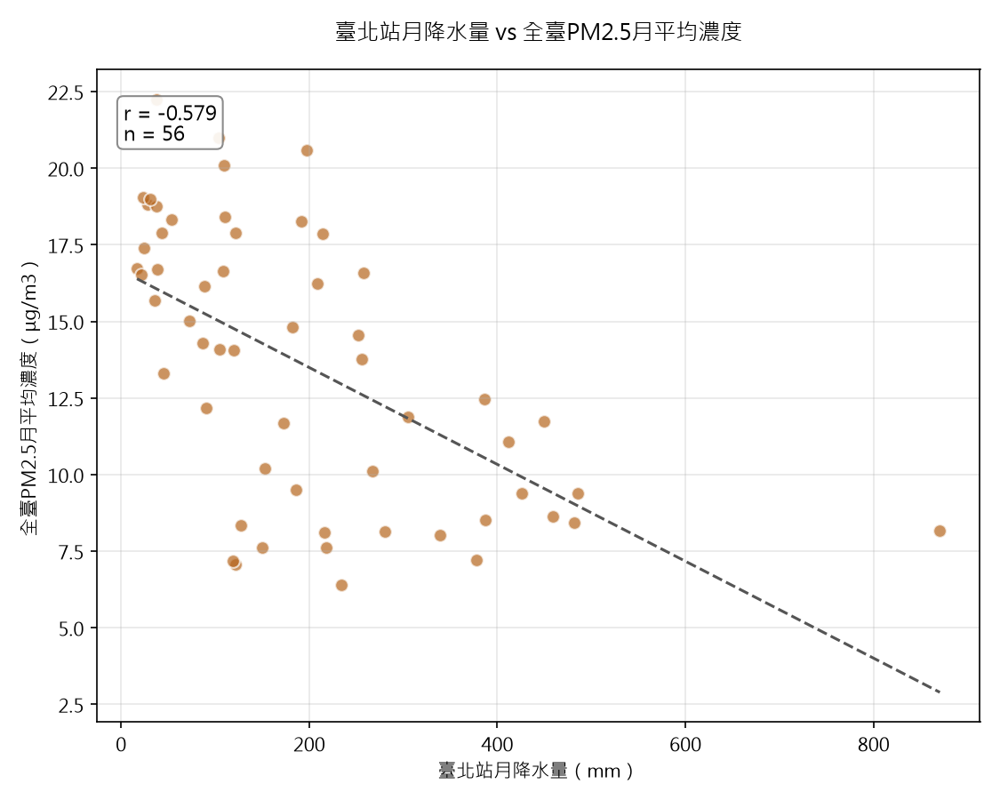

130,832
去重複後測站日資料筆數
以環境部「環境資料開放平臺」公開的全臺PM2.5日均值資料為對象，涵蓋2022～2026年共56個月份、去重複後逾13萬筆測站日資料，進行長期趨勢與季節性視覺化、縣市／假日平日／氣象因子關係分析，並建立預測模型。
空氣品質是政府開放資料中與民眾健康最直接相關的類別之一。環境部透過「環境資料開放平臺」對外公開全臺各測站的PM2.5日均值資料。本專案按月份批次下載，取得2022年1月～2026年8月共56個月份資料，涵蓋全臺81個測站代碼、22個縣市，並額外向中央氣象署CODiS取得臺北測站的月風速、降水量資料，做為氣象關聯分析之用。



正規化中英文縣市名稱（22個縣市在原始資料中因EN/ZH混用而出現44種不同寫法）後，比較各縣市平均濃度差異；並比較平日與假日的濃度差異，藉此判斷污染來源是否與交通尖峰時段等短期人為活動有關。另外整合CODiS臺北測站的月風速、降水量資料，探討氣象因子與PM2.5的相關性。




以縣市、年份、月份、星期幾共4個欄位為特徵，比較線性迴歸與Random Forest兩種模型。從去重複後13萬筆資料中隨機抽樣3萬筆建模（避免訓練時間過長），訓練集24,000筆、測試集6,000筆。
| 模型 | R平方（解釋力） | MAE | RMSE |
|---|---|---|---|
| 線性迴歸 | 0.3681 | 5.219 μg/m³ | 6.796 μg/m³ |
| Random Forest | 0.3972 | 4.978 μg/m³ | 6.638 μg/m³ |